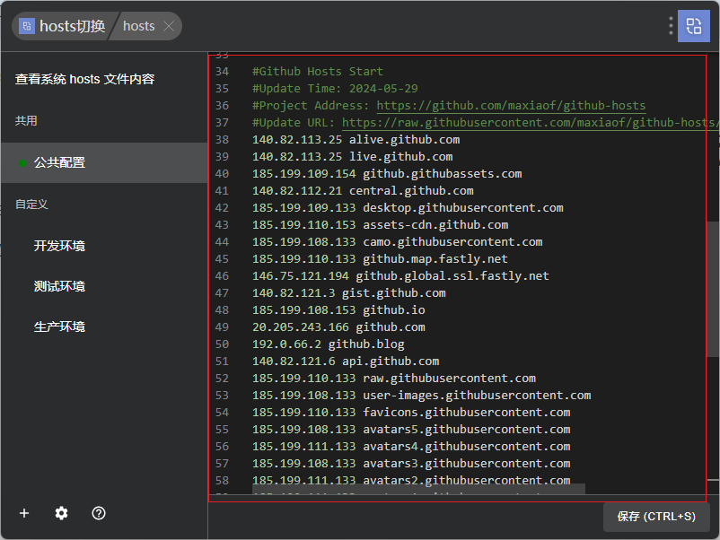
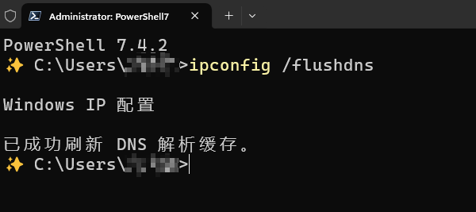
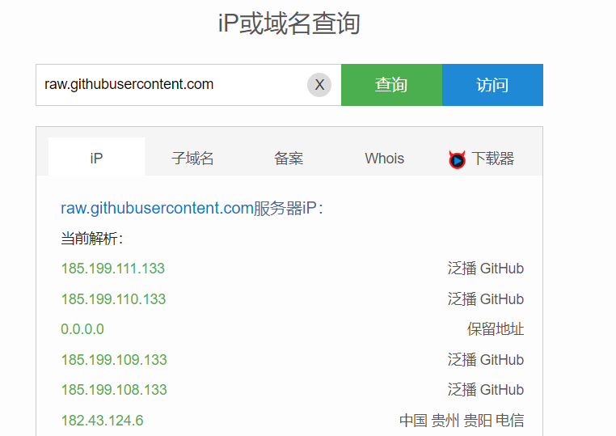

加速 GitHub 和解决图片无法显示的问题
1 复制仓库提供的域名
仅文章图片存于博客仓库，其他图片存于 GitHub 图床
参考 GitHub 用户的方法：https://github.com/maxiaof/github-hosts
把下述内容复制到 host 文件中（我也会在博客不定期更新网址）
1
2
3
4
5
6
7
8
9
10
11
12
13
14
15
16
17
18
19
20
21
22
23
24
25
26
27
28
29
30
31
32
33
34
35
36
37
38
39
40
41
42
43
| #Github Hosts Start
#Update Time: 2024-05-29
#Project Address: https://github.com/maxiaof/github-hosts
#Update URL: https://raw.githubusercontent.com/maxiaof/github-hosts/master/hosts
140.82.113.25 alive.github.com
140.82.113.25 live.github.com
185.199.109.154 github.githubassets.com
140.82.112.21 central.github.com
185.199.109.133 desktop.githubusercontent.com
185.199.110.153 assets-cdn.github.com
185.199.108.133 camo.githubusercontent.com
185.199.110.133 github.map.fastly.net
146.75.121.194 github.global.ssl.fastly.net
140.82.121.3 gist.github.com
185.199.108.153 github.io
20.205.243.166 github.com
192.0.66.2 github.blog
140.82.121.6 api.github.com
185.199.110.133 raw.githubusercontent.com
185.199.108.133 user-images.githubusercontent.com
185.199.110.133 favicons.githubusercontent.com
185.199.108.133 avatars5.githubusercontent.com
185.199.111.133 avatars4.githubusercontent.com
185.199.108.133 avatars3.githubusercontent.com
185.199.111.133 avatars2.githubusercontent.com
185.199.111.133 avatars1.githubusercontent.com
185.199.111.133 avatars0.githubusercontent.com
185.199.110.133 avatars.githubusercontent.com
140.82.121.10 codeload.github.com
3.5.25.88 github-cloud.s3.amazonaws.com
3.5.25.88 github-com.s3.amazonaws.com
52.216.138.67 github-production-release-asset-2e65be.s3.amazonaws.com
54.231.163.217 github-production-user-asset-6210df.s3.amazonaws.com
52.217.173.217 github-production-repository-file-5c1aeb.s3.amazonaws.com
185.199.110.153 githubstatus.com
140.82.113.17 github.community
51.137.3.17 github.dev
140.82.114.21 collector.github.com
13.107.42.16 pipelines.actions.githubusercontent.com
185.199.109.133 media.githubusercontent.com
185.199.108.133 cloud.githubusercontent.com
185.199.110.133 objects.githubusercontent.com
#Github Hosts End
|
修改 hosts 文件（我才用了 utools 的 hosts 插件进行修改）：

修改后保存，然后在 cmd 处输入

然后即可快速读取图片。
2 手动处理
如果发现复制过来不行，那可能是因为域名变了，这个时候就需要手动修改，主要是针对 github.com 和 raw.githubusercontent.com
进入网址：https://www.ip138.com ，输入搜索网址（以 raw.githubusercontent.com 为例），解析得到

把里面出现的域名复制到 hosts 文件中，然后刷新 DNS 即可（0.0.0.0 那个怪怪的，还是不要复制了）
1
2
3
4
5
| 185.199.111.133 raw.githubusercontent.com
185.199.110.133 raw.githubusercontent.com
185.199.109.133 raw.githubusercontent.com
185.199.108.133 raw.githubusercontent.com
182.43.124.6 raw.githubusercontent.com
|